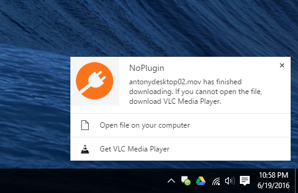

Back in January, I released a new Chrome extension called QuickChrome. With Chrome 45 completely dropping support for plugins, and other browsers trying to do the same thing, I thought it would be a fun project to try and restore some functionality.
QuickChrome detected any QuickTime player objects on websites, and if Chrome supported the video format, replaced it with Chrome’s built-in video player. If not, it gave you a link to download the file and play it on your machine. I figured being able to play some content with Chrome’s video player, and a download link for others, was much more useful than a useless ‘Missing Plugin’ error.
Well, for some reason it blew up in popularity. So I gave it a much-needed upgrade - say hello to NoPlugin!
NoPlugin is basically QuickChrome, but better. It now supports detecting Windows Media and RealPlayer plugins. For anything that it can’t play inside the browser, it now provides a one-click download and this new notification to open it right from Chrome:

Pretty cool, right? It also has a ton of internal changes and tweaks to make it run much smoother than QuickChrome ever did.
You can download NoPlugin from the Chrome Web Store here. If you still see QuickChrome there, it might still be rolling out to some users. I’m also working on uploading it to the Opera extensions site as well. Enjoy!